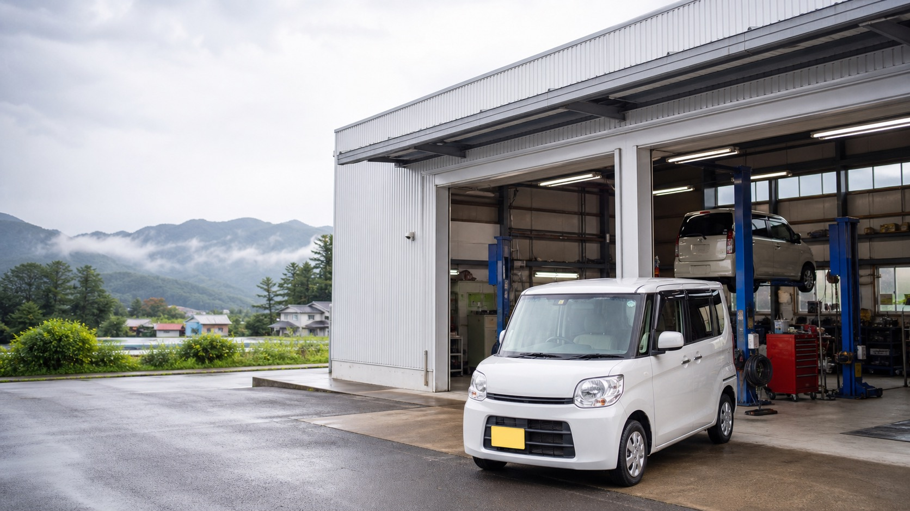
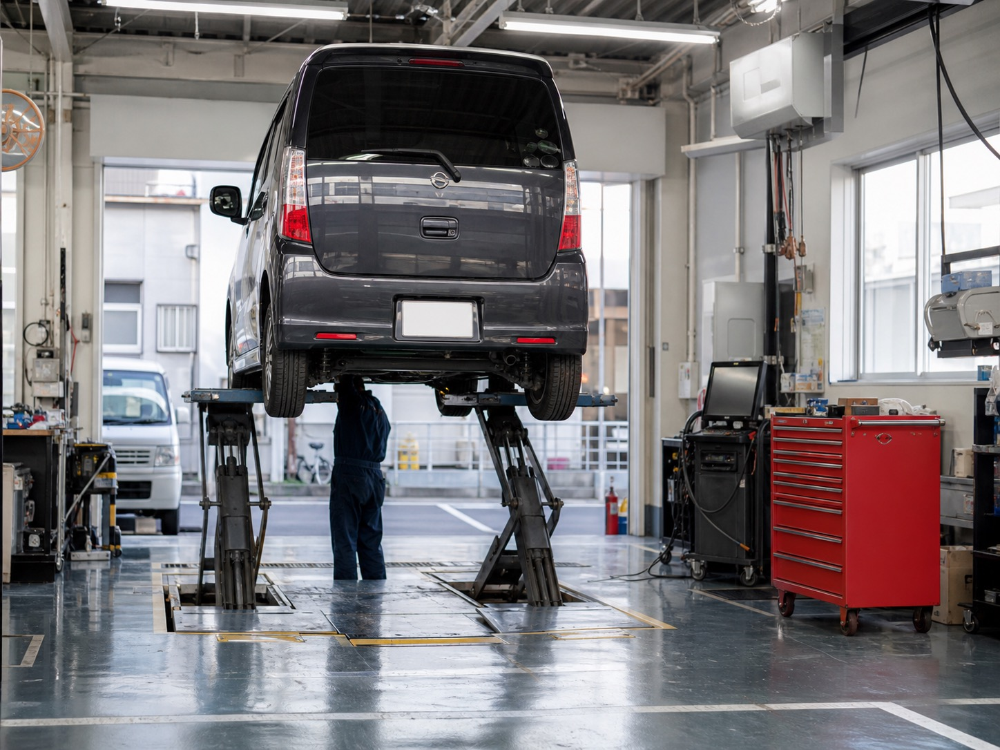
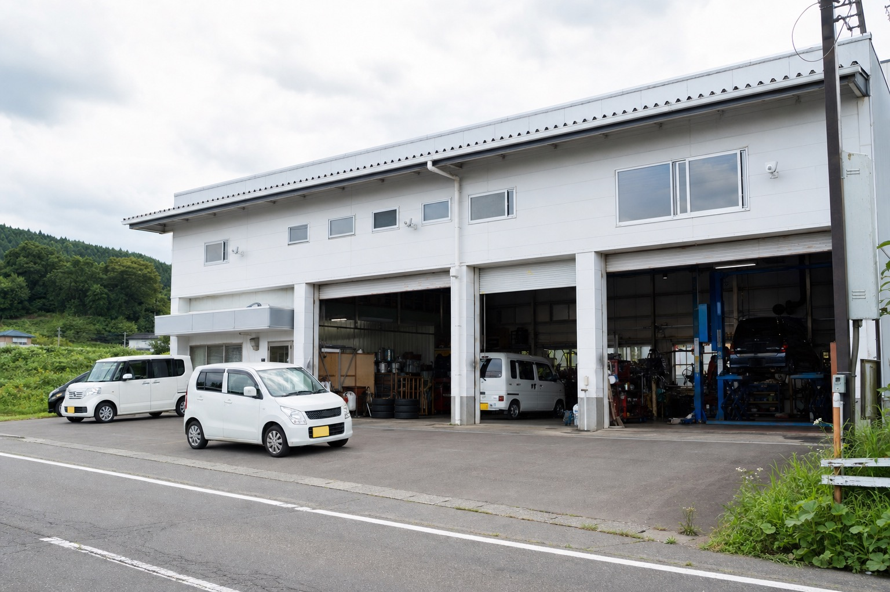
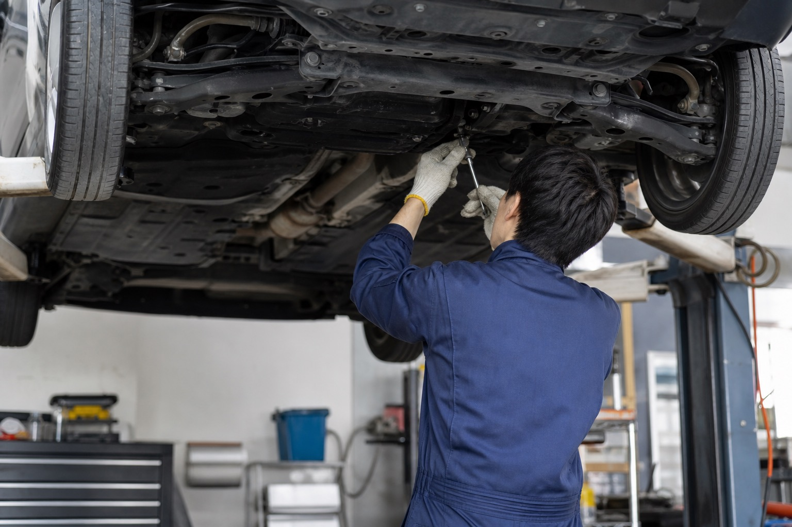
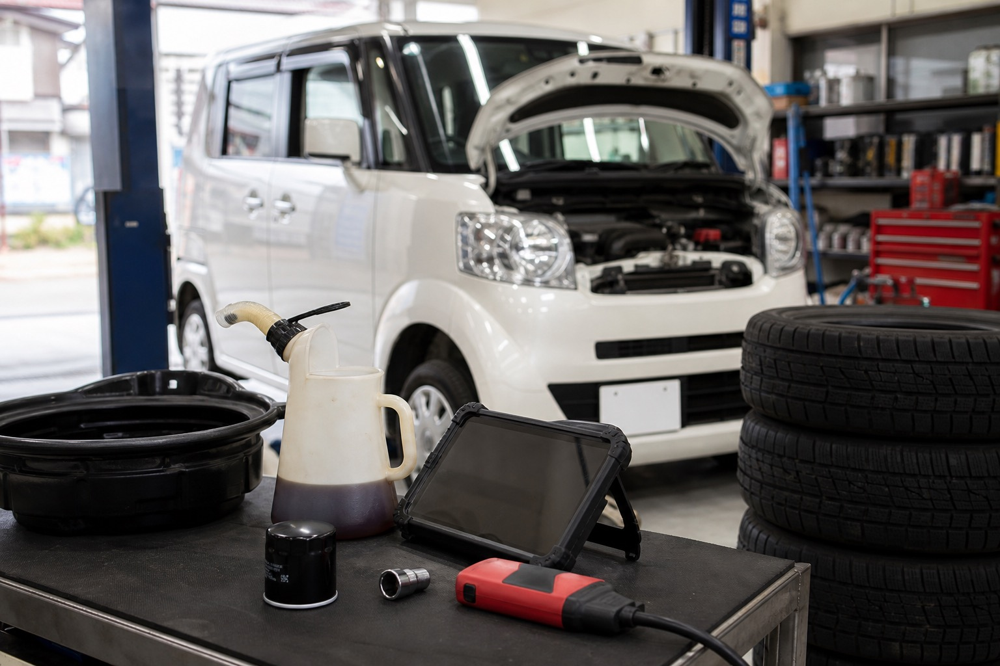

車検・点検・診断
指定工場としての車検相談。入庫日程や必要書類、概算費用は要確認です。

既存掲載情報では、車検・メンテナンス・オイル交換を中心に、代車無料、土曜営業、クレジットカード・ローン支払い対応、輸入車・ハイブリッド車対応が確認できます。
このデモでは、整備内容と来店前に知りたい情報をすっきり整理し、「電話する前の不安」を減らす構成にしています。

実際の公開前には、対応範囲・料金・予約方法を再確認して掲載します。
指定工場としての車検相談。入庫日程や必要書類、概算費用は要確認です。
日常点検、消耗品交換、異音・不調の相談など。対応車種の詳細は要確認です。
掲載情報では「SNスペシャル SN 5W-30 1,100円/L」を確認。最新価格は要確認です。
グーネットピット上では持込み取付、整備・修理・塗装・板金カテゴリ導線を確認。実対応範囲は要確認です。
検索サイトでは情報が分散しがちな「営業時間」「支払い方法」「代車」「対応車種」「整備士体制」を、公式HP風に再編集しています。
下記はすべて提案用の仮画像です。公開時は実際の工場外観、設備、作業風景へ差し替える想定です。



グーネットピット掲載情報では、無料電話番号と見積り問い合わせ導線を確認しています。このデモでは、電話と簡易フォームを自然に並べています。
0176-56-2519 通話無料番号：0078-6058-9356確認できない項目は、営業提案時にヒアリングして正式掲載します。
車の不調は、小さな違和感のうちに。